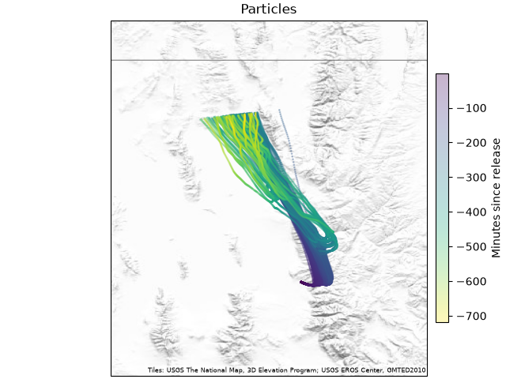
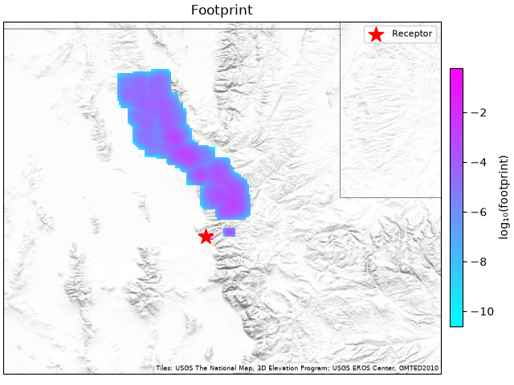

Checking A Run#
A batch of thousands of runs is quick to start and slow to find wrong. We
run stilt check before every batch, because it finds the common mistakes
in the inputs in seconds, and stilt status after, because it says which
simulations need another look and why. When a footprint finishes but looks
wrong, the last section lists what to check, in order.
Before a run#
Most failures of a new project come from its inputs: a met folder with a
typo, met files that miss some receptor’s hours, a receptor off the grid.
stilt check reads the project’s files and the headers of the met files,
and runs and downloads nothing:
$ stilt check ./my_project
Project: /data/my_project receptors=3
Variants: hrrr (met hrrr, footprint), hrrr-err (met hrrr, particles only)
check variant receptor message
met_files hrrr, hrrr-err 202107150600_-111.848_40.766_10 no met file for 2021-07-14 12:00
met_files hrrr, hrrr-err 202107150700_-111.848_40.766_10 no met file for 2021-07-14 12:00
met_files hrrr, hrrr-err 202107150600_-114.2_40.766_10 no met file for 2021-07-14 12:00
grid hrrr 202107150600_-114.2_40.766_10 longitude -114.2 and latitude 40.766 are outside the footprint grid (-113 to -110.5 longitude, 40 to 42 latitude)
Found 4 problems: met_files 3, grid 1
Here three receptors need a met file from 12:00 on 14 July that is not in the met folder, and one receptor lies west of the footprint grid. Variants that share what a check looks at share its rows. The command exits with 0 when it finds nothing and 1 when it lists anything, so a batch script can stop on it.
Check |
What it found |
What to do |
|---|---|---|
|
A met’s |
Correct |
|
A receptor’s run needs a met file that is not there, or files of two products hold one of its times. The message names the hours or the two files. |
Add the files, or keep each product in its own folder (Meteorology). |
|
With |
Widen |
|
A file the receptors need holds one time period, which HYSPLIT cannot read. |
Use files that each hold at least two time periods. |
|
A file the receptors need ends partway through a time step, so it is damaged. |
Download or crop the file again. |
|
A receptor lies outside the variant’s footprint grid, so only particles that travel into the grid add to its footprint. |
Widen the grid. A receptor meant to lie outside it, such as one far downwind, is still listed. |
|
The |
Make the table with |
|
|
Add |
stilt check reads the headers of the met files, not every record, so a
file damaged in the middle passes and fails the run that opens it.
In Python, project.check() returns the same table, one row for each
thing found. It is empty for the sample project, which has everything its
runs need:
In [1]: import stilt
In [2]: project = stilt.Project("./my_project")
In [3]: project.check()
Out[3]:
Empty DataFrame
Columns: [check, variant, receptor, message]
Index: []
The table is a pandas DataFrame, so problems[problems.check ==
"met_files"] selects the receptors that lack met files.
Where each simulation stands#
stilt status counts the simulations of a project by state and the
failed ones by reason:
$ stilt status ./my_project
Project: /data/my_project total=1200 complete=1150 failed=42 interrupted=0 pending=8
failed: MET_COVERAGE 34, TIMEOUT 8 (why: each one's .failure.yaml, under /data/output/logs)
Output: /data/output
particles settings=hrrr-5d01e7 1,150 files hrrr
footprints settings=hrrr-93278c 1,150 files hrrr
In Python, project.status() has one row per simulation, so you can
select the failures and read why:
In [4]: status = project.status()
In [5]: status.state.value_counts()
Out[5]:
state
complete 4
failed 0
interrupted 0
pending 0
Name: count, dtype: int64
In [6]: status[status.state == "failed"][["receptor", "variant", "reason", "message"]]
Out[6]:
Empty DataFrame
Columns: [receptor, variant, reason, message]
Index: []
Every simulation of the sample project is complete, so there are no failures to list. The state comes from the files in the output directory, so it is the same whoever asks:
State |
What it means |
What to do |
|---|---|---|
|
Its result files exist: the particles, and the footprint when the variant has a grid. |
Nothing. A rerun skips it. |
|
The last run failed, and a failure record says why (below). |
Fix the cause and run again. Only the unfinished simulations run. |
|
The run started and was stopped before it finished: a time limit, preemption, Ctrl-C, or a lost connection. |
Run again. A Slurm task that gets its two-minute warning requeues itself. |
|
It has not run yet, or its particles exist and its footprint does not. |
Run the project. |
stilt run exits with 0 when all its simulations are complete, 1 when
some failed and 3 when some were interrupted, so a script or a scheduler
can rerun on 3 and stop to look on 1 (Exit codes lists every code).
Why a simulation failed#
A failed simulation does not stop the others. The worker writes a failure
record beside the run’s log and goes on, and sim.failure reads it:
>>> sim = project.simulation(receptor_id, "hrrr")
>>> sim.failure
{'step': 'particles', 'reason': 'MET_COVERAGE',
'message': 'HYSPLIT: start point not within (x,y,t) any data file',
'time': '2026-10-03T21:14:05+00:00'}
step says whether the transport model failed (particles, which fails
every variant that shares those particles) or only this variant’s footprint
(footprint). message is the line of the log that says what went
wrong. Three reasons cover most failures:
MET_COVERAGEThe meteorology does not cover the run: a file is missing or damaged, or the met ran out partway. The message names the file or the hours. Download or crop the file again, or add the missing hours. A receptor outside the met’s grid fails this way too, and the message says so (check the sign of its longitude).
EXIT_STATUSHYSPLIT was killed or exited with an error. A
SIGKILLthat nothing in PYSTILT sent is often the out-of-memory killer, so ask for more memory per task or run fewer receptors at once.TIMEOUTThe run took longer than
timeoutunderexecution:. Raise it, or look for a slow node or a met file read over a slow filesystem.
Every reason, with what to do, is in HYSPLIT Integration (“Failure
reasons”). An error that is not a known reason is recorded by its class,
such as ValueError, with its traceback. That is usually a bug, and worth
reporting.
sim.log is the transport model’s log. A failed run’s workdir, the folder
HYSPLIT ran in, is kept under scratch/ in the output directory, and
sim.kept_workdir says where. For HYSPLIT it holds CONTROL,
SETUP.CFG and MESSAGE, enough to rerun hycs_std by hand. Set
keep_workdir: true under execution: to keep every run’s workdir.
Empty footprints#
Sometimes a run succeeds but no particle reaches the footprint grid. The footprint is then empty, and the simulation is complete, so reruns skip it:
sim.has_footprint # True
sim.footprint is None # True: no particle reached the grid
An empty footprint is not a footprint of zeros. The transport never
connected the receptor to your grid, so treat it as missing in a comparison
or an inversion. project.footprints() lists the empty ones in
attrs["empty"], and a Jacobian in H.empty. If there are many, the
grid is too small or not upwind: plot the particles (below) and widen it.
My footprint looks wrong#
Start from the particles, because a map of them shows where the air came from whatever the footprint grid:
In [7]: sim = project.simulation("202101150800_-111.848_40.766_10", "hrrr")
In [8]: sim.particles.stilt.plot.map();
In [9]: sim.footprint.stilt.plot.map();




The particles of this run went north-northwest up the valley until they reached the northern edge of the cropped met files, where they stopped, and the footprint covers the hours before that. Then check, in order:
- The time
Receptor times are UTC. A time in local time shifts the release, and with it every trajectory.
- The release height
Altitudes are above ground unless the receptor says
altitude_ref="msl". A tower inlet given above sea level as if above ground starts the particles high above the boundary layer, so the footprint is weak and far away.- The grid
Particles that leave the grid add nothing, so a footprint cut off at an edge needs a wider grid.
- The length of the run
n_hourssets how far back the particles go. Particles also stop early when they all leave the met’s domain or its crop, and the run is still complete.sim.particles["age"].abs().max() / 60is how many hours they went. If that is short and the footprint needs more, widensubgrid_bounds.- The number of particles
Few particles give a patchy footprint, so raise
numpar. We use 1000 for a tower.- The near-field correction
hnf_plume(on by default) corrects the footprint close to the receptor, where particles have not yet mixed through the boundary layer. A run with it off shows how much of the footprint is near the receptor.- The units
Footprints are in ppm per (µmol m⁻² s⁻¹), per time layer (an hour unless
tressays otherwise).foot.sum("time")gives one map of the whole run.
PYSTILT’s footprints match STILT-R’s to a relative 10⁻⁷ per cell (STILT-R Parity). If yours differ from a STILT-R run of the same receptor, compare the settings first: Coming From STILT-R has STILT-R’s names.